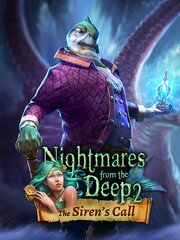

Nightmares from the Deep 2: The Siren`s Call
Details
|  | |
| Playtime | 3h 44m 0s |
| Last Activity | 10/6/2014 5:01:08 |
| Added | 8/19/2023 14:50:25 |
| Modified | 8/19/2023 15:24:34 |
| Completion Status | Played |
| Library | Steam |
| Source | Steam |
| Platform | PC (Windows) |
| Release Date | 4/4/2014 |
| Community Score | 70 |
| Critic Score | |
| User Score | |
| Genre | Adventure Puzzle |
| Developer | Artifex Mundi |
| Publisher | Artifex Mundi |
| Feature | Single Player |
| Links | Steam Official GOG Twitch |
| Tag | |
Description
Nightmares from the Deep: The Siren`s Call is the sequel to the smash hit Nightmares from the Deep: The Cursed Heart.This epic adventure features an exciting plot full of outstanding puzzles and unforeseeable twists and turns.
When Sarah Black, curator at the Caribbean Naval Museum, receives a package from a mysterious messenger, she is unwittingly drawn into an ancient conflict. Inside the package she finds an artifact, and instantly assailants descend on the museum to rob her. The artifact is stolen. Sarah lowers her head in disbelief as she realizes that again she is falling headfirst into a nightmare from the deep.
Next Sarah finds herself on the shores of Kingsmouth, a forgotten fishing town which holds an incredible secret. A would-be messenger reveals the sad truth: he and the rest of the town’s denizens are suffering from a curse that is gradually turning them into ghoulish, mutated ocean creatures… a curse that was cast by none other than the mayor, Murray, and the old sea-devil himself, Davy Jones.

When Sarah Black, curator at the Caribbean Naval Museum, receives a package from a mysterious messenger, she is unwittingly drawn into an ancient conflict. Inside the package she finds an artifact, and instantly assailants descend on the museum to rob her. The artifact is stolen. Sarah lowers her head in disbelief as she realizes that again she is falling headfirst into a nightmare from the deep.
Next Sarah finds herself on the shores of Kingsmouth, a forgotten fishing town which holds an incredible secret. A would-be messenger reveals the sad truth: he and the rest of the town’s denizens are suffering from a curse that is gradually turning them into ghoulish, mutated ocean creatures… a curse that was cast by none other than the mayor, Murray, and the old sea-devil himself, Davy Jones.
Features
- Thrilling storyline with complex plot based on a dark mystery
- Unusual depth of character for the Hidden Object genre
- AAA-quality cinematics
- A plethora of majestic locations
- Varied gameplay: interactive hidden-object scenes, mahjong, and many others
- Three different types of collectible objects
- The sequel to the smash hit Nightmares from the Deep: The Cursed Heart, building on the first game’s story
- Bonus gameplay: an additional adventure, telling the story of the praetorians who seek redemption after decades of serving Major Murray
- Additional materials: concept art, wallpapers and a stunning soundtrack
- Replayable minigames and HO scenes